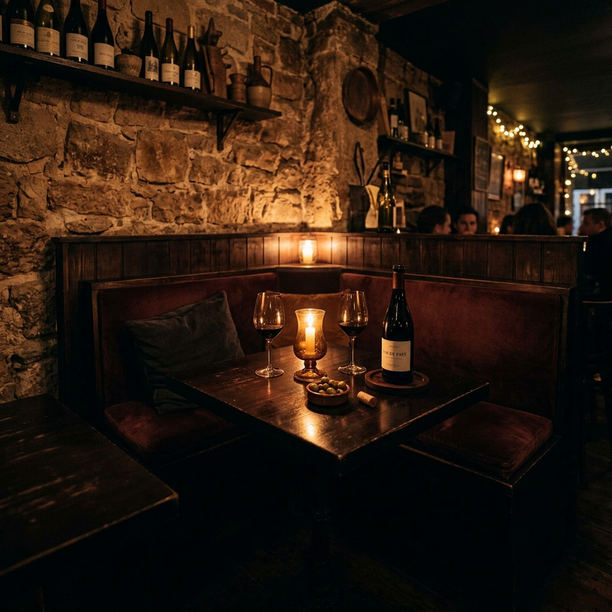

La Tente
San Telmo
Wines that feel like conversation.

Retiro
Hidden beneath the surface, where nights feel like cinema.
A subterranean warmth shaped by amber light, slow jazz, and conversations that naturally drift past midnight. It feels like stepping out of time.



San Telmo
Wines that feel like conversation.
Palermo
Neon warmth and intimate chaos.